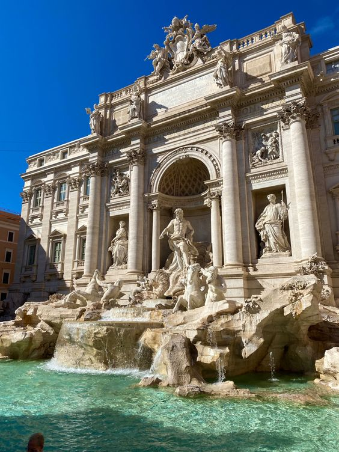
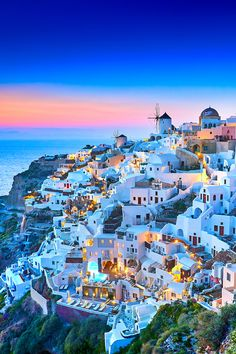

Discover the charm and beauty of Italy, with its rich history, culture, and delectable cuisine.
Fontana di Trevi, Rome
 Experience the magic of the Fontana di Trevi, a stunning Baroque fountain nestled in the heart of Rome.
Best Time to Visit:
Spring or Fall
Must-See Attractions:
Vatican City, Florence, Venice
Santorini, Greece
Experience the stunning beauty of Santorini, with its mesmerizing sunsets and picturesque white-washed buildings.
Oia
 Renowned for its stunning sunsets, Oia offers panoramic views of the Aegean Sea.Panoramic view from Oia's cliffs, overlooking the island of Santorini, Thira, Volcano (Palia & Nea Kameni) and beyond. Hear the relaxing sounds of the waves
Best Time to Visit:
Summer
Must-See Attractions:
Red Beach, Akrotiri Archaeological Site
Paris, France
Explore the romantic streets of Paris, known for its iconic landmarks and rich history.
Eiffel Tower
Symbolizing love and romance, the Eiffel Tower offers breathtaking views of the city.